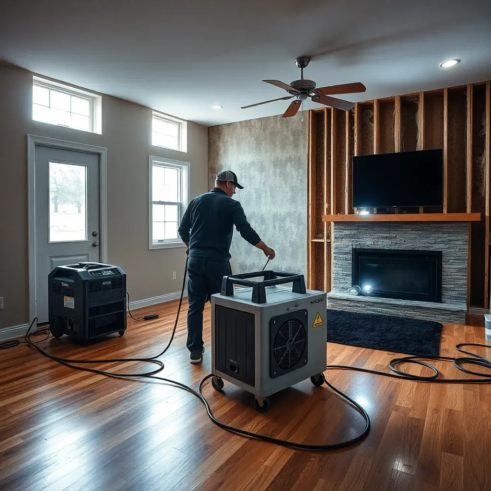

Water Damage & Mold Prevention in Colorado Springs
Mold starts growing within 24–48 hours of water exposure. Act fast — our team responds quickly to water damage events across the Pikes Peak region.

Colorado Springs Water Damage Risks You Need to Know
Colorado Springs may be semi-arid, but the region has unique water damage risks that surprise many homeowners. Spring snowmelt from the Rockies saturates the ground rapidly, often entering basements through foundation cracks and window wells before owners realize anything is wrong. The city's seasonal monsoon rains bring sudden, intense downpours that overwhelm drainage systems. And the extreme freeze-thaw cycling — temperatures swinging 40–50°F in a single day — repeatedly stresses plumbing, roofing, and building materials, leading to slow leaks that go unnoticed for weeks or months.
Every one of these scenarios creates the wet conditions that mold needs. And unlike the obvious visible flooding, the sneaky slow leaks — HVAC condensate, roof penetrations around chimneys, cold water pipe condensation in summer — are the ones that create the most extensive hidden mold growth.
The 24–48 Hour Mold Window
This is the single most important fact about water damage and mold: mold begins colonizing wet porous materials within 24–48 hours under common indoor temperature conditions. Drywall, insulation, wood framing, and carpeting can all sustain visible mold growth after just one day of being wet.
The good news: if you act within this window with professional drying equipment, mold can often be prevented entirely — avoiding costly remediation down the road. Waiting even a few days to "see if it dries out" can turn a $500 drying job into a $5,000+ remediation.
What to Do Immediately After Water Damage
- Stop the source — shut off the water supply, cover the roof penetration, or address whatever caused the water intrusion.
- Document everything with photos and video before any cleanup. This is essential for insurance claims.
- Move valuables off wet flooring and away from water-affected areas.
- Open windows if outdoor humidity is lower than indoor (typical in Colorado Springs's dry climate).
- Call Springs Mold Solutions immediately. Do not wait. Our 24/7 response means we can begin emergency drying within hours.
- Do not disturb potential mold growth if water has been sitting for more than 48 hours — contact a professional before cleaning up.
Our Water Damage Response Services
- Emergency water extraction and removal
- Industrial dehumidification and drying
- Moisture mapping to verify complete drying
- Antimicrobial preventive treatment on at-risk materials
- Post-drying mold inspection and clearance
- Insurance documentation and adjuster coordination
Frequently Asked Questions
How quickly can mold grow after water damage in Colorado Springs?
Mold can begin growing within 24–48 hours of water exposure. Colorado Springs homes have lower baseline humidity than humid climates, but mold still establishes rapidly when porous materials stay wet even briefly. The critical window is 24–48 hours — professional drying within this window can prevent mold entirely.
Does homeowner's insurance cover mold from water damage in Colorado?
Most standard policies cover sudden and accidental water damage (burst pipe, appliance failure) and resultant mold if addressed promptly. Gradual leaks and flooding from outside are typically excluded. Document damage immediately and call your insurer before cleanup. We work directly with insurance adjusters.
What should I do immediately after water damage in my Colorado Springs home?
Act within 24 hours: stop the source, document with photos, move valuables, open windows if outside air is drier, and call a professional immediately. Don't wait to "see if it dries on its own" — professional drying equipment removes moisture from inside walls and subfloors that air circulation can't reach.
Water Damage? Call Us Now — Available 24/7
Every hour matters. Our team responds quickly to prevent mold before it starts across the Colorado Springs area.